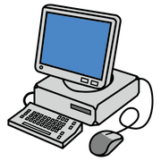
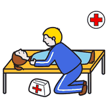
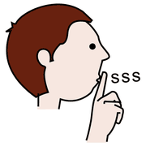
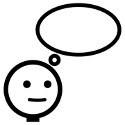

Modulo 8, in classe
Tecnologie che aiutano
Un tablet non è inclusivo da solo. Lo diventa nelle mani di un insegnante che sa a che cosa serve, per quell'alunno, in quel momento.
tre verbi
da ricordare
A che cosa servono
 tablet
tablet
computer
aiutarePer un alunno nello spettro la tecnologia ha un vantaggio in più: è prevedibile. Lo schermo risponde sempre allo stesso modo, non alza la voce, non cambia espressione. Proprio per questo va usata con un obiettivo preciso e con tempi chiari, perché non diventi un rifugio.
Gli strumenti, per bisogno
tablet
silenzio timer
timer| Bisogno | Che cosa serve | Qualche esempio |
|---|---|---|
| Sapere che cosa succede | Agende visive su tablet, con immagini o foto personali. | Niki Agenda; oppure una semplice presentazione con una diapositiva per attività. |
| Fare un compito passo passo | App per l'analisi del compito, con foto o video di ogni passaggio. | TaskAbile. |
| Vedere il tempo | Timer visivi, su tablet o proiettati alla LIM. | Le app di timer visivo; anche un timer online a schermo intero. |
| Comunicare | App di CAA con tabelle a simboli e sintesi vocale. | LetMeTalk, gratuita e con i simboli ARASAAC. |
| Capire le situazioni sociali | Strumenti per scrivere storie sociali con testo e immagini. | AraWord, che scrive in simboli mentre digiti; un libro digitale creato con la classe. |
Le app cambiano in fretta: prima di proporle, controlla che siano ancora disponibili e adatte al tuo dispositivo. Il portale SIVA della Fondazione Don Gnocchi è un buon punto di partenza per cercare ausili e app. Per AraWord trovi la mia guida passo passo.
prima
l'obiettivo,
poi l'app
Come sceglierli
 scegliere
scegliere
pensare- Parti dal bisognoChe cosa deve diventare possibile? Solo dopo cerchi lo strumento.
- Un'app alla voltaE sempre la stessa per lo stesso scopo, a scuola e a casa.
- PersonalizzaFoto della sua aula, della sua giacca, della sua maestra.
- Regole chiareQuando si usa, per quanto, che cosa succede dopo: anche questo in agenda.
- Coinvolgi la famigliaSe lo strumento viaggia tra scuola e casa, la generalizzazione è più facile.
- VerificaDopo qualche settimana: l'alunno è più autonomo? Se no, si cambia.
Prova in classe
 classetablet
classetablet gruppo
gruppo- Una giornata digitaleTrasforma l'agenda visiva costruita nel modulo 3 in una versione per tablet o LIM.
- Una storia sociale digitaleRiprendi la storia del modulo 6 e scrivila in simboli con AraWord.
- Uno strumento per i compagniPrepara una tabella di comunicazione sul tablet da usare durante un gioco di gruppo.